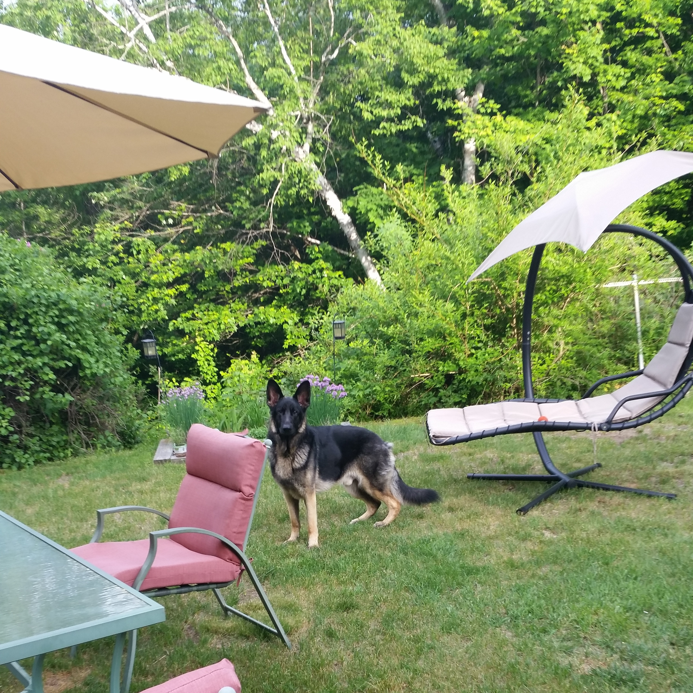

Special quirks about Koda...
Koda initially came from a breeder in New Hampshire. He is a purebred German Shepard with the classic muddy paws look. He was destined to be a show dog but was born without a set of molars in his mouth, making him useless. That's when he joined my family. He would later go on to break another tooth in the front. He is also very energetic and loves being chased around the yard.

Back to Home